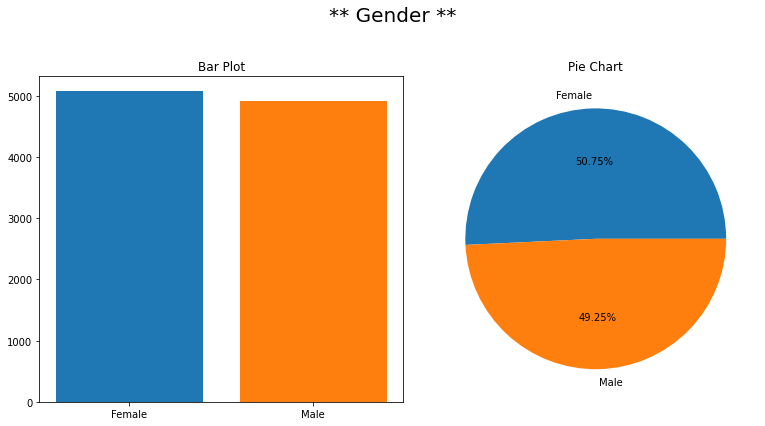
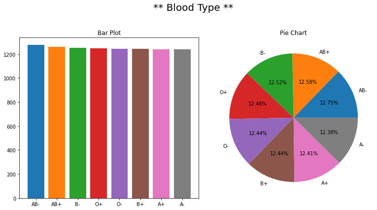
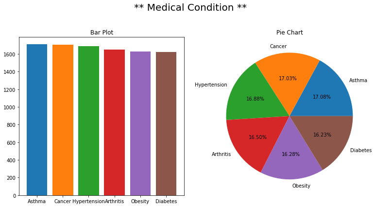
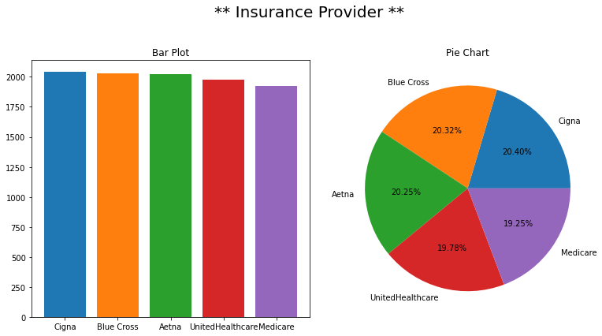
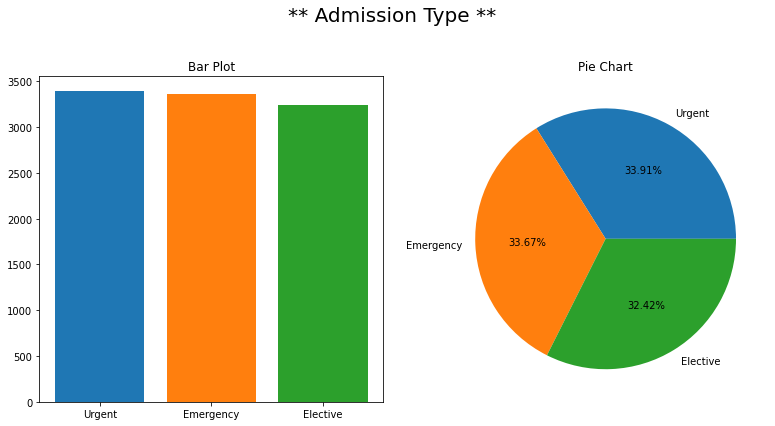
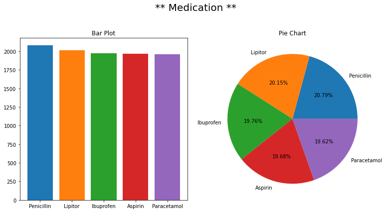
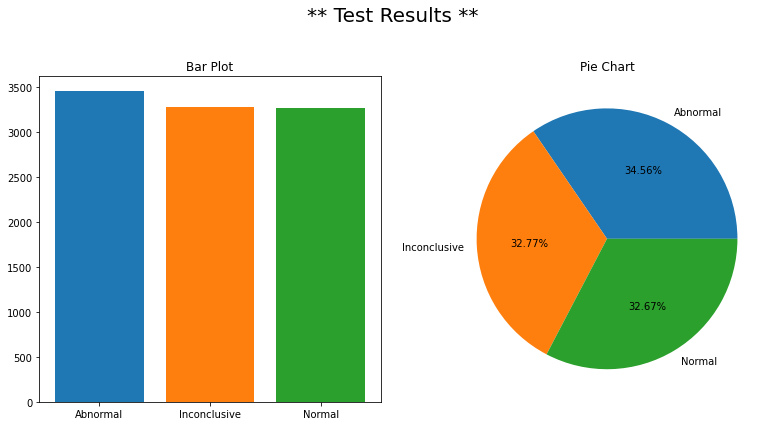
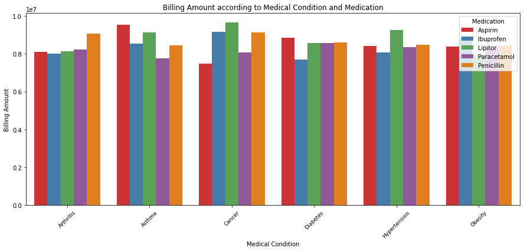
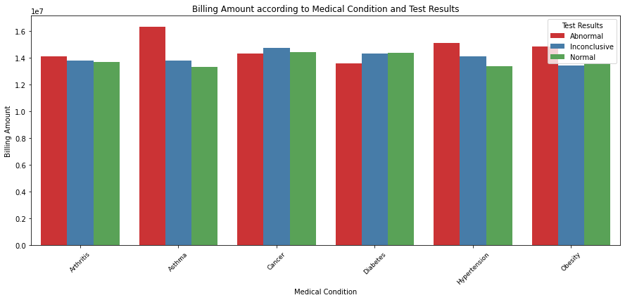

Each column provides specific information about the patient, their admission, and the healthcare services provided, making this dataset suitable for various data analysis and modeling tasks in the healthcare domain. Here’s a brief explanation of each column in the dataset -
Name: This column represents the name of the patient associated with the healthcare record.
Age: The age of the patient at the time of admission, expressed in years.
Gender: Indicates the gender of the patient, either “Male” or “Female.”
Blood Type: The patient’s blood type, which can be one of the common blood types (e.g., “A+”, “O-”, etc.).
Medical Condition: This column specifies the primary medical condition or diagnosis associated with the patient, such as “Diabetes,” “Hypertension,” “Asthma,” and more.
Date of Admission: The date on which the patient was admitted to the healthcare facility.
Doctor: The name of the doctor responsible for the patient’s care during their admission.
Hospital: Identifies the healthcare facility or hospital where the patient was admitted.
Insurance Provider: This column indicates the patient’s insurance provider, which can be one of several options, including “Aetna,” “Blue Cross,” “Cigna,” “UnitedHealthcare,” and “Medicare.”
Billing Amount: The amount of money billed for the patient’s healthcare services during their admission. This is expressed as a floating-point number.
Room Number: The room number where the patient was accommodated during their admission.
Admission Type: Specifies the type of admission, which can be “Emergency,” “Elective,” or “Urgent,” reflecting the circumstances of the admission.
Discharge Date: The date on which the patient was discharged from the healthcare facility, based on the admission date and a random number of days within a realistic range.
Medication: Identifies a medication prescribed or administered to the patient during their admission. Examples include “Aspirin,” “Ibuprofen,” “Penicillin,” “Paracetamol,” and “Lipitor.”
Test Results: Describes the results of a medical test conducted during the patient’s admission. Possible values include “Normal,” “Abnormal,” or “Inconclusive,” indicating the outcome of the test.
Code
import numpy as npimport pandas as pdimport matplotlib.pyplot as pltimport seaborn as snsimport plotly.graph_objects as goimport plotly.offline as pyo import plotly.io as pioimport sklearnimport plotly.express as eximport warningswarnings.filterwarnings('ignore')
cols = ['Gender','Blood Type', 'Medical Condition','Insurance Provider', 'Admission Type','Medication', 'Test Results']# Categorical Featuresfor i in cols: fig, ax = plt.subplots(1, 2, figsize=(11, 6)) fig.suptitle(f'** {i} **', fontsize=20)# Bar plot ax[0].bar(df[i].value_counts().index, df[i].value_counts().values, color=sns.color_palette("tab10")) ax[0].set_title('Bar Plot')# Pie chart df[i].value_counts().plot(kind='pie', autopct="%.2f%%", ax=ax[1], colors=sns.color_palette("tab10")) ax[1].set_title('Pie Chart') ax[1].set_ylabel('') # Hide the y-label for the pie chart plt.tight_layout(rect=[0, 0, 1, 0.95]) # Adjust the layout plt.show()







Highest “Features” according to Billing Amount
Code
# Highest "Features" according to Billing Amountcols = ['Gender','Blood Type', 'Medical Condition','Doctor','Hospital', 'Insurance Provider', 'Admission Type','Medication', 'Test Results']for i in cols:if i =='Gender': char_bar = df.groupby(['Gender'])[['Billing Amount']].sum().reset_index() char_bar = char_bar.sort_values(by=("Billing Amount"), ascending=False) top = char_bar.head(10) fig = go.Figure() fig.add_trace(go.Bar(x=top['Gender'], y=top["Billing Amount"])) fig.update_layout(title="Highest Gender According to "+'Billing Amount', xaxis_title='Gender', yaxis_title="Billing Amount", plot_bgcolor='white', paper_bgcolor='white', font=dict(color='black')) pyo.init_notebook_mode(connected=True) pyo.iplot(fig)else: char_bar = df.groupby([i])[['Billing Amount']].sum().reset_index() char_bar = char_bar.sort_values(by=("Billing Amount"), ascending=False) top = char_bar.head(10) fig = go.Figure() fig.add_trace(go.Bar(x=top[i], y=top['Billing Amount'])) fig.update_layout(title="Highest "+ i +" According to Billing Amount", xaxis_title= i, yaxis_title="Billing Amount", plot_bgcolor='white', paper_bgcolor='white', font=dict(color='black')) pyo.init_notebook_mode(connected=True) pyo.iplot(fig)
Billing Amount according to Medical Condition and Medication
Code
df_trans = df.groupby(['Medical Condition', 'Medication'])[['Billing Amount']].sum().reset_index()plt.figure(figsize=(15,6))sns.barplot(x=df_trans['Medical Condition'], y=df_trans['Billing Amount'], hue=df_trans['Medication'], ci=None, palette="Set1")plt.title("Billing Amount according to Medical Condition and Medication")plt.ylabel("Billing Amount")plt.xticks(rotation=45, fontsize =9)plt.show()

Billing Amount according to Medical Condition and Test Results
Code
# Billing Amount according to Medical Condition and Test Resultsdf_trans = df.groupby(['Medical Condition', 'Test Results'])[['Billing Amount']].sum().reset_index()plt.figure(figsize=(15,6))sns.barplot(x=df_trans['Medical Condition'], y=df_trans['Billing Amount'], hue=df_trans['Test Results'], ci=None, palette="Set1")plt.title("Billing Amount according to Medical Condition and Test Results")plt.ylabel("Billing Amount")plt.xticks(rotation=45, fontsize =9)plt.show()

Number of days hospitalized
Code
# Let's create a column with the number of days hospitalized# Convert columns to datetimedf['Date of Admission'] = pd.to_datetime(df['Date of Admission'])df['Discharge Date'] = pd.to_datetime(df['Discharge Date'])# Calculate the number of days hospitalizeddf['Days hospitalized'] = (df['Discharge Date'] - df['Date of Admission']).dt.daysdf.head()
Name
Age
Gender
Blood Type
Medical Condition
Date of Admission
Doctor
Hospital
Insurance Provider
Billing Amount
Room Number
Admission Type
Discharge Date
Medication
Test Results
Days hospitalized
0
Tiffany Ramirez
81
Female
O-
Diabetes
2022-11-17
Patrick Parker
Wallace-Hamilton
Medicare
37490.983364
146
Elective
2022-12-01
Aspirin
Inconclusive
14
1
Ruben Burns
35
Male
O+
Asthma
2023-06-01
Diane Jackson
Burke, Griffin and Cooper
UnitedHealthcare
47304.064845
404
Emergency
2023-06-15
Lipitor
Normal
14
2
Chad Byrd
61
Male
B-
Obesity
2019-01-09
Paul Baker
Walton LLC
Medicare
36874.896997
292
Emergency
2019-02-08
Lipitor
Normal
30
3
Antonio Frederick
49
Male
B-
Asthma
2020-05-02
Brian Chandler
Garcia Ltd
Medicare
23303.322092
480
Urgent
2020-05-03
Penicillin
Abnormal
1
4
Mrs. Brandy Flowers
51
Male
O-
Arthritis
2021-07-09
Dustin Griffin
Jones, Brown and Murray
UnitedHealthcare
18086.344184
477
Urgent
2021-08-02
Paracetamol
Normal
24
Highest ‘Features’ according to average number of days hospitalized
Code
import plotly.graph_objs as goimport plotly.offline as pyo# Highest 'Features' according to average number of days hospitalizedfor i in cols: char_bar = df.groupby([i])['Days hospitalized'].mean().reset_index() char_bar = char_bar.sort_values(by="Days hospitalized", ascending=False) top = char_bar.head(10) fig = go.Figure() fig.add_trace(go.Bar(x=top[i], y=top["Days hospitalized"]))# Dynamic title based on the column title =f'Highest {i} according to average number of days hospitalized' fig.update_layout( title=title, xaxis_title=i, yaxis_title="Days hospitalized",# plot_bgcolor='black', paper_bgcolor='gray', font=dict(color='white'), width=800, # Adjust width as needed height=600# Adjust height as needed ) pyo.init_notebook_mode(connected=True) pyo.iplot(fig)